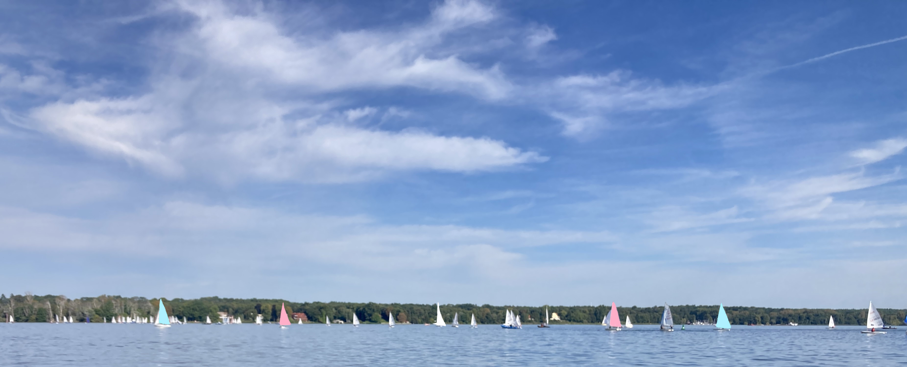

Willkommen beim Trans & Cross Meet Up Wolfsburg
Ein regelmäßiger Treffpunkt für Transgender und Crossdresser in der Region Wolfsburg, Gifhorn, Südheide und darüber hinaus.

.
.
Das Meet-Up
Es findet jeden vierten Freitag im Monat statt.
Ort: Cafe Schrill in 38442 Wolfsburg-Mörse, Hattorfer Strasse 23.
Zeit: 19:00 bis 22:00.
Nächste Termine:
24.04.2026
22.05.2026
26.06.2026
24.07.2026
----Die darauf folgenden Termine werden rechtzeitig abgestimmt und hier aktualisiert.
Anmeldung wäre nett (an meine email, s.u.), muss aber nicht sein - entscheidet flexibel, ob Ihr teilnehmt.
.
Um was geht es?
Angesprochen sind Transgender* und Crossdresser, die Interesse und Spaß daran haben, sich in einem Restaurant zum Kennenlernen und Austauschen zu treffen.
Über Themen, die uns betreffen oder über alles andere was uns bewegt oder sonst ein Thema für uns ist. Alter egal. Angehörige sind auch willkommen.
Wer sich nicht traut - vielleicht zum ersten Mal, aber auch sonst - "en femme" (MzF-Transgender) oder "en homme" (FzM-Transgender) teilzunehmen,
ist auch gern "hybrid" oder genderkonform gekleidet willkommen.
Ich organisiere die Termine und schreibe sie in die obige Box - alles andere ergibt sich, wenn Ihr da seid.
Dies erfolgt als private Initiative ohne Förderung oder ohne ein Teil einer anderen bestehenden Initiative oder Gruppe zu sein.
Das Meet Up ist dazu gedacht, andere trans Personen und Crossdresser persönlich zu treffen und kennen zu lernen. Es ist ein ganz zwangloses,
nettes Zusammensein. Ziel ist es, ins Gespräch zu kommen. Fragen zu stellen. Antworten auf Fragen zu geben oder zu finden.
Etwas über sich erzählen oder einfach nur zuhören - beides ist gerne gesehen. Kleidung steht zwar nicht im Mittelpunkt, aber wer gerne nicht-genderkonform
ausgehen möchte - dies ist auch eine Gelegenheit dafür (s. auch "Was noch?" weiter unten).
Wir treffen uns an einem Tisch im Restaurant des Cafe Schrill - nicht in einem separate Raum, denn wir sind so wie wir sind ein Teil der Gesellschaft und müssen nicht unsichtbar sein.
*: Ich benutze "Transgender" als Oberbegriff - alle, die sich - auch im weitesten Sinne - dazu zählen, sind eingeschlossen.
.
Warum?
Es gibt in dieser Region nur ein eingeschränktes Angebot an Möglichkeiten, trans Personen und Crossdresser persönlich zu treffen. Außer persönlichen Treffen,
Verabredungen - aber dazu muss man ja erstmal ein Netzwerk haben. Ich habe das bisher nicht und deswegen habe ich diese Initiative ergriffen und würde
mich freuen, wenn sich so Menschen zusammenfinden, die Interesse und Spaß am persönlichen Treffen haben.
Der bis vor kurzem existierende Transgender-Stammtisch Wolfsburg / Transgender-Selbsthilfegruppe, die auch im Cafe Schrill statt fand, kann und wird hierdurch
nicht fortgesetzt.
Hier ist der Anspruch einfach nur sich zu treffen, ins Gespräch zu kommen (oder zu bleiben) und sich austauschen.
.

Wer bin ich?
Ich heiße Olivia und bin noch nicht lange dabei - aber es ist mir wichtig, meine Identität auszudrücken und auszuleben. Für mich gehört es dazu, "en femme"
auszugehen und Leute mit ähnlichen Identitäten zu treffen - auch wenn sie ihre anders leben als ich. Ich tue dies auch in Foren. Aber jemandem direkt zu begegnen,
ist für mich etwas anderes und die sich daraus entwickelnde Kommunikation auch.
Warum ich das Meet Up organisiere? u.a. weil ich selbst gerne dazu beitragen möchte, daß wir so wie wir sind von der Gesellschaft wahrgenommen, akzeptiert
und verstanden werden und so unsere Community unterstützen möchte.
Ich hoffe, daß ich selbst damit einen kleinen Beitrag dazu leisten kann, dass wir so wie wir sind von der Gesellschaft wahrgenommen, weiter akzeptiert und
besser verstanden werden und so unsere Community unterstützen möchte.
Meine email-Adresse findet Ihr unten bei Kontakte. Für Fragen oder Kommentare, auch kritische, bin ich dankbar - schreibt mir. Bitte auch, wenn Ihr Ideen
zur Verbesserung dieser Website habt.